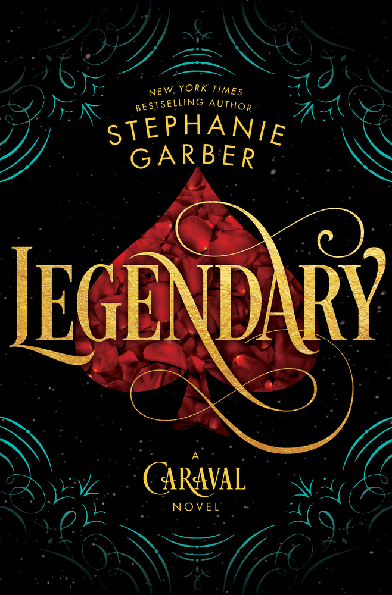
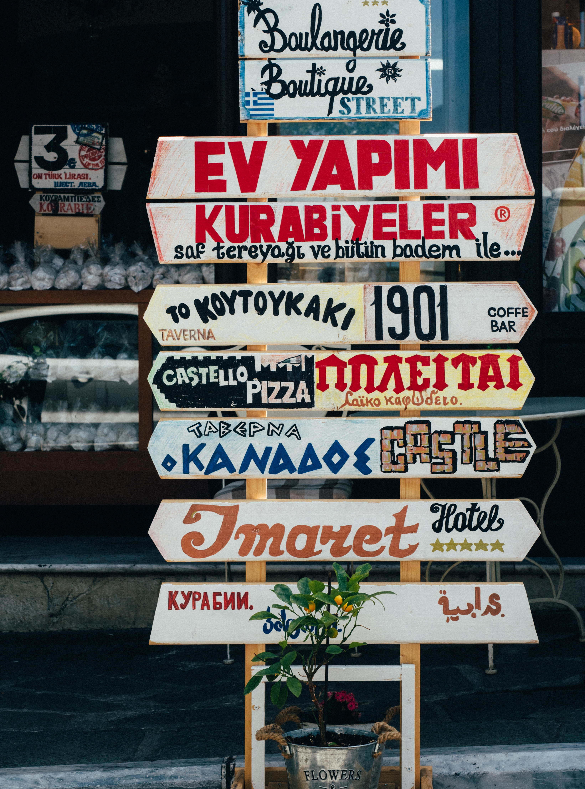

The plot
"Whatever you’ve heard about Caraval, it doesn’t compare to the reality. It’s more than just a game or a performance. It’s the closest you’ll ever find to magic in this world . . ."
(Caraval Page 9)
Scarlett has never left the tiny island Conquered Isle of Trisda where she and her beloved sister, Tella, live with their powerful, and cruel, father. Now Scarlett's father has arranged a marriage for her, and Scarlett thinks her dreams of seeing Caraval, the far-away, once-a-year performance where the audience participates in the show, are over.
But this year, Scarlett's long-dreamt of invitation of Caraval Master Legend finally arrives. With the help of a mysterious sailor named Julian, Tella whisks Scarlett away to the show.
„Dreams that come true can be beutiful, but they can also turn into nightmares when people won't wake up.“
(Caraval Page 77)
Scarlett awakes in a raft with Julian. He says Donatella will be on the island with them. She made it look like Scarlett was kidnapped so she can still marry her Count.
When they get on the private island Isla de los Sueños of Caraval Master Legend it is freezing cold, snow everywhere.
The only thing open in town is a magical clock shop. They find clothes, food, and a note to Scarlett from Legend.
A man opens a portal in one of the clocks, a shortcut into Caraval. Julian tells Scarlett not everyone in Caraval is what they seem and won’t take it.
Only, as soon as they arrive, Tella is kidnapped by Caraval's mastermind organizer, Legend. It turns out that this season's Caraval revolves around Tella, and whoever finds her first is the winner.
Scarlett has been told that everything that happens during Caraval is only an elaborate performance. But she nevertheless she enters in a game of love, heartbreak, and magic with the other players in the game. And whether Caraval is real or not, she must find Tella before the five nights of the game are over, a dangerous domino effect of consequences is set off, and her sister disappears forever.
The main characters
The main topics
Magic
Magic is a big topic in this book.
Stephanie Garber manages to authentically represent magical elements.

Adventure
Adventure and Fiction takes also a big piece of the topic pie.
Unbelievable can happen.


Love
Truly a game of love

The settings of time and place

Caraval takes the reader into a historically fantastic setting, a world reminiscent of the 18th century.
Caraval takes place in a fictional world.
The Conquered Isle of Trisda is part of the Meridian Empire.
Isla de los Sueños instead is a private island of the Caraval Master Legend and is outside of the Meridian Empire.
The genre and linguistic aspects

Fantasy Fiction

If you want to read more Fantasy Fiction books then wait for release of The Magical Sequel to Caraval
Legendary

Garber describes her world, her carnival, with beautiful words and manages to create a picture in front of the reader's mind, and to stimulate the imagination.
She uses a elevated language, nevertheless the book is very pleasant to read :)